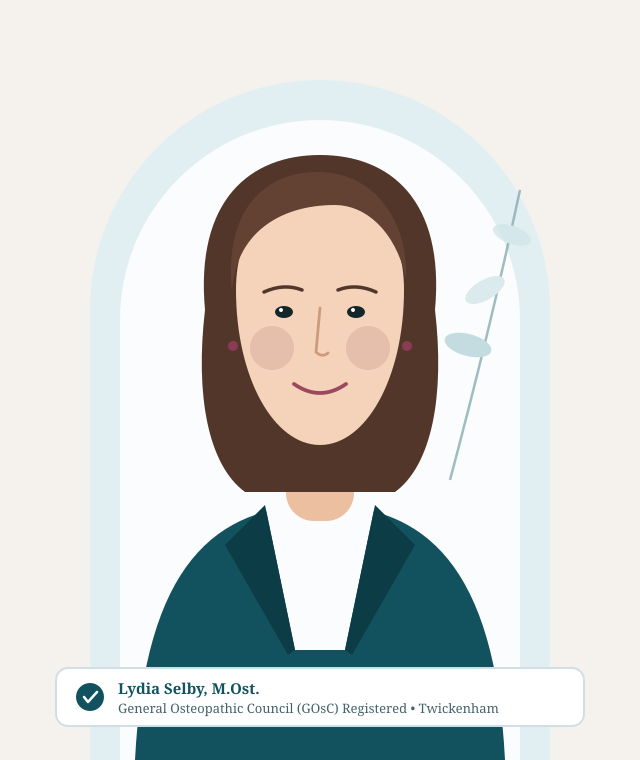

60-Min Initial
Adults & Everyday Strain
Support for neck, jaw, shoulder, and lower-back tension linked to desk posture, commuting, gardening, or busy routines.
Twickenham Green • By Appointment Only
At Meadowside Clinic, Lydia Selby, M.Ost. offers attentive, gentle hands-on osteopathic care—helping adults, expectant parents, babies, children, and older adults ease everyday tension and move with greater comfort.
Prefer to talk first? Call 020 8555 0142 for a friendly chat or send a brief enquiry.

Meet Your Osteopath
As a solo practitioner at Meadowside Clinic, Lydia sees every patient personally from first message to follow-up—giving you a calm, unhurried room rather than a busy multi-clinic conveyor belt.
Trained to Master’s level in London with specialist postgraduate training in cranial and paediatric osteopathy, she looks beyond isolated sore spots to understand how posture, breathing, and daily strain interact across your whole body.
General Osteopathic Council (GOsC) Registered
Statutorily regulated UK healthcare professional • M.Ost. degree • Postgraduate cranial & paediatric training • Enhanced DBS checked.
Who We Welcome
Cranial osteopathy uses a refined, listening touch to sense muscular guarding and subtle restriction throughout the body—adapting naturally to your age, sensitivity, and daily demands.
Support for neck, jaw, shoulder, and lower-back tension linked to desk posture, commuting, gardening, or busy routines.
Supported side-lying and seated techniques to ease rib, pelvic, and lower-back discomfort before and after birth.
Very light, unhurried cranial contact in a calm room where babies can feed, rest, or stay held by a parent throughout.
Gentle joint and soft-tissue care focused on comfortable mobility and everyday confidence, with zero forceful clicking.
Straightforward Clinical Care
Choosing an osteopath for yourself or your child requires trust. Here is how Lydia approaches every appointment.
Common Questions
Unsure what cranial osteopathy feels like or how appointment-based visits work? Here are the three questions new visitors ask most often.
Read All 7 FAQs & Session DetailsNo. Cranial osteopathy uses very light, steady manual contact while you rest comfortably clothed. Lydia does not perform sudden joint manipulation unless discussed and appropriate, making sessions reassuring even when you feel sore or sensitive.
No referral is required to arrange an appointment for yourself or your child. If Lydia observes anything that would benefit from medical investigation, she will always recommend speaking with your GP.
Yes—you are welcome to send a short question or call 020 8555 0142 for a friendly chat before deciding whether to schedule a consultation.
Local Patient Reflections
“I came in with lingering neck and upper-back tension after months at a home desk. Lydia explained everything clearly, never rushed, and the treatment felt remarkably gentle.”
“The ground-floor room near Twickenham Green was peaceful and easy to reach with a buggy. Lydia made us feel completely at ease from the moment we arrived.”
Begin a Conversation
Whether you would like to request an appointment or simply talk through whether cranial osteopathy suits your needs, Lydia will reply personally within 1–2 working days.